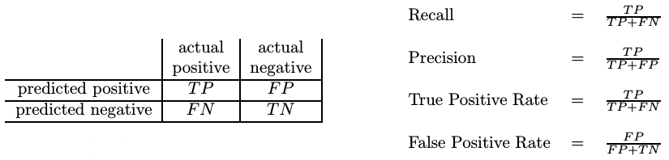
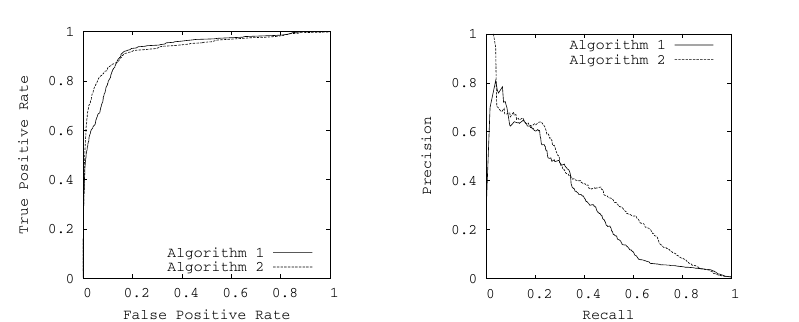

Your browser doesn't support the features required by impress.js, so you are presented with a simplified version of this presentation.
For the best experience please use the latest Chrome, Safari or Firefox browser.
Precision-Recall
vs
ROC
Precision-Recall:

Precision-Recall vs ROC:

Precision-Recall vs ROC:

Precision-Recall vs ROC:
Method 1: 100 retrieved documents, 90 relevant
Method 2: 2000 retrieved documents, 90 relevant
Precision-Recall vs ROC:
Method 1: 100 retrieved documents, 90 relevant
Method 2: 2000 retrieved documents, 90 relevant
Method 1: 0.9 TPR, 0.00001 FPR
Method 2: 0.9 TPR, 0.00191 FPR
Difference of 0.0019
Precision-Recall vs ROC:
Method 1: 100 retrieved documents, 90 relevant
Method 2: 2000 retrieved documents, 90 relevant
Method 1: 0.9 recall, 0.9 precision
Method 2: 0.9 recall, 0.045 precision
Difference of 0.855
Thanks for your patient ;)